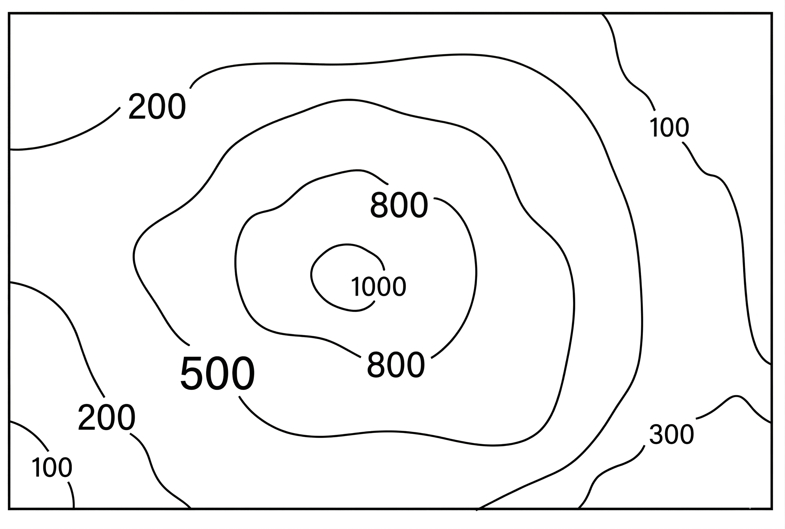

Homework Section 15.1
-
Question 1
The goal in this problem is to approximate the volume of the solid region under the surface `z=xy^2` and above the rectangle `R={(x,y) | 0 <= x <= 6, 0 <= y <= 4}`:
-
Use a Riemann sum with `m=3`, `n=2`, and use the upper right corner of each sub-rectangle as sample points.
-
Repeat part (a) using midpoints as your sample points.
-
-
Question 2
The goal in this problem is to approximate the volume of the solid region under the surface `z=x^2+2y` and above the rectangle `R=[1,3] times [0,4]`.
-
Use a Riemann sum with `m=2`, `n=2`, and use the lower right corner of each sub-rectangle as sample points.
-
Repeat part (a) using midpoints as your sample points.
-
-
Question 3
A table of values is given for a function `f(x,y)` defined on `R=[2,4] times [0,4]`.
Table of values for f(x,y) x \ y 0 1 2 3 4 1 2 1 -2 -6 -5 1.5 3 1 -4 -7 -6 2 4 3 0 -5 -8 2.5 5 5 3 -1 -4 3 7 8 6 3 0 3.5 8 10 7 4 1 -
Estimate `int int_R f(x,y) dA` using midpoints with `m=n=2`.
-
Estimate the double integral with `m=2` and `n=4` by using the lower left corner of each sub-rectangle as sample points.
-
-
Question 4
Evaluate the double integral by first identifying it as the volume of a solid.
-
`int int_R 4 dA`, `R={(x,y) | -1 <= x <= 2, 1 <= y <= 5}`
-
`int int_R (6-x) dA`, `R={(x,y) | 0 <= x <= 6, 0 <= y <= 3}`
-
-
Question 5
Rectangleopia is a small, rectangular country which measures 180 miles by 117 miles. The contour map below shows elevations in feet. Use midpoints with `m=n=2` to estimate the average elevation in Rectangleopia.

Image Description: A black-and-white topographic map with elevation labels in feet. A central circular contour represents a summit of 1,000 feet. Moving outward, concentric irregular loops are labeled 800 feet and 500 feet. The terrain slopes downward toward the edges: the top-left and bottom-left corners show elevations dropping to 200 and 100 feet; the top-right shows a 100-foot contour; and the bottom-right corner shows a 300-foot elevation contour.